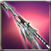
Crescemento Javelin
Available to equip above Lv. 1 - Fighter
Savelin that is decided the A.R. and ATK Power according to the players level.
Max 6 enhancement possible.
Attributes
Rating: 0

Available to equip above Lv. 1 - Fighter
Savelin that is decided the A.R. and ATK Power according to the players level.
Max 6 enhancement possible.
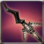
Available to equip above Lv. 1 - Fighter
Trial Javelin made as a tester to develop the powerful weapon. Cant be used continuously, as its durability wasnt considered while making.[ATK to All types+120%, Attack SPD+20%]
Available to equip above Lv. 1 - Fighter
Armors
Available to equip above Lv. 1 - Fighter
DEF (0-400)
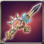
Available to equip above Lv. 1 - Fighter
Blacksmith, Bryan made it by refining Blue Armonium with her special skill.{br}[ATK +100% to Lifeless, Wildlife, Daemon, Undead and Human types]
Available to equip above Lv. 1 - Fighter
Trial Javelin made as a tester to develop a better quality weapon. It can not be used continuously since its durability was not considered while making. [All Types of ATK +100%, ATK SPD +20%]
Available to equip above Lv. 1 - Fighter
A Vespanolas refined javelin for pioneers. It cannot be used continuously since its durability wasnt considered. [ATK toward all types +100%, ATK SPD +20%]
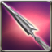
Available to equip above Lv. 72 - Fighter
Javelins are capable of fast stabbing attacks that deal tremendous damage to light armor.
Available to equip above Lv. 76 - Fighter
Javelins are capable of fast stabbing attacks that deal tremendous damage to light armor.
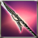
Available to equip above Lv. 80 - Fighter
Javelins are capable of fast stabbing attacks that deal tremendous damage to light armor. [ATK SPD +5%]
Available to equip above Lv. 80 - Fighter
A javelin crafted for easy pioneer usage. A powerful weapon crafted for combat.
Available to equip above Lv. 84 - Fighter
Javelins are capable of fast stabbing attacks that deal tremendous damage to light armor. [ATK SPD +5%]
Available to equip above Lv. 84 - Fighter
Javelins are capable of fast stabbing attacks that deal tremendous damage to light armor. [ATK SPD +8%]
 Capybara sickle x1 Capybara sickle x1 |
 Composite steel x26 Composite steel x26 |
 Pure Talt x60 Pure Talt x60 |
 Pure Quartz x60 Pure Quartz x60 |
 inspire a soul into Steel Piece x1 inspire a soul into Steel Piece x1 |
 Fool Stone x1 Fool Stone x1 |
Available to equip above Lv. 84 - Fighter
A javelin crafted for easy pioneer usage. You can feel a mysterious power from it.
Available to equip above Lv. 84 - Fighter
Javelins are capable of fast stabbing attacks that deal tremendous damage to light armor.
Available to equip above Lv. 88 - Fighter
Javelins are capable of fast stabbing attacks that deal tremendous damage to light armor.
Available to equip above Lv. 92 - Fighter
[Unique] Javelins are capable of fast stabbing attacks that deal tremendous damage to light armor. [ATK SPD +5%]
Available to equip above Lv. 92 - Fighter
Javelins are capable of fast stabbing attacks that deal tremendous damage to light armor. [ATK SPD +8%]
Available to equip above Lv. 92 - Fighter
Javelins are capable of fast stabbing attacks that deal tremendous damage to light armor. [ATK SPD +5%]
Available to equip above Lv. 96 - Fighter
[Unique] Javelins are capable of fast stabbing attacks that deal tremendous damage to light armor. [ATK SPD +8%]
Available to equip above Lv. 100 - Fighter
Javelins are capable of fast stabbing attacks that deal tremendous damage to light armor. [ATK SPD +8%]
Lv.100 - Exclusive equipment for Fighter /Exclusively for above Expert
A javelin that belongs to the Graham family who prospered in the past. It can inflict [Focusing]. [ATK to all species +10%, Penetration +5, ATK SPD +10%, Critical +10]
 Melee Weapon Crystal - Lv 35 x2 Melee Weapon Crystal - Lv 35 x2 |
 Star Stone x50 Star Stone x50 |
 kryptonite x200 kryptonite x200 |
 Enchantchip Veteran x100 Enchantchip Veteran x100 |
 Elemental Jewel x10 Elemental Jewel x10 |
| Fool Stone x1 |
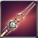
Lv.100 - Fighter / Master exclusive
A javelin that was honored to an overlord who had absolute power and great riches. It has a beautiful shape that helps the wearer perform well but also has grudges of people sacrificed by the overlord. [10% chance to inflict [Focusing], Penetration +5, Critical +10, Immunity -10]
| Melee Weapon Crystal - Lv 35 x2 |
| Star Stone x100 |
 Symbol of Naraka x100 Symbol of Naraka x100 |
 Enchantchip Expert x50 Enchantchip Expert x50 |
| Elemental Jewel x20 |
| Fool Stone x1 |
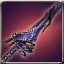
Lv.100 - Fighter / Master Exclusive
A Javelin that was crafted by Armonium which maintained holy power in spite of erosion of Abyss. It maintains the weapon shape by the holy power, but the beautiful shape has been encroached and ominous. [Penetration+10, Immunity-5, Critical+10, +20% damage to all tribes]
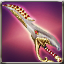
Only Veteran + can equip - Fighter
[Unique] Someone made it as a weapon, but it is only part of the real power that was used to predict destiny. [A.R. +1]
 Red Ticket of Arsene Circus x1 Red Ticket of Arsene Circus x1 |
| Enchantchip Lv 96 x20 |
| Fool Stone x1 |
| Fool Stone x1 |
Only Veteran + can equip - Fighter
Someone made it as a weapon, but it is only part of the real power that was used to predict destiny.
| Red Ticket of Arsene Circus x1 |
 Archangel heart x1 Archangel heart x1 |
 Seed of Yggdrasil x1 Seed of Yggdrasil x1 |
 Seirens scale x1 Seirens scale x1 |
| Fool Stone x1 |
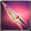
Only Veteran + can equip - Fighter
A javelin that strikes with the fury of hellfire. [+121 Fire Damage]
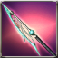
Only Veteran + can equip - Fighter
An impressive icy weapon that looks like frozen bone. [+121 Ice Damage]
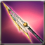
Only Veteran + can equip - Fighter
A javelin that attacks with the speed and power of a lightning bolt. [+121 Lightning Damage]
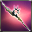
Only Veteran + can equip - Fighter
Javelin resembling the canine tooth of a giant serpent.
 Dragon Heart x1 Dragon Heart x1 |
| Composite steel x100 |
 Mega Aidanium x100 Mega Aidanium x100 |
 Mega Etretanium x100 Mega Etretanium x100 |
 Snail shell x30 Snail shell x30 |
| Fool Stone x1 |
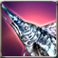
Only Veteran + can equip - Fighter
A giant frozen fish. Cold, sharp, and hard as rock. Can inflict great damage. A lot. [ATK SPD +8%, 5% chance of inflicting [Freeze] on enemy]
 Cast iron x50 Cast iron x50 |
 Reinforced leather x50 Reinforced leather x50 |
| Pure Aidanium x300 |
| Pure Etretanium x300 |
| Enchantchip Lv 92 x3 |
| Fool Stone x1 |
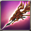
Only Veteran + can equip - Fighter
A special javelin that is carved with the decoration of a strong powerful dragon. Its sensitive and sharp edge of spear can even pierce the scale of a Dragon. [Additional Fire ATK +30, Penetration +5, ATK SPD +8]
| Melee Weapon Crystal - Lv 32 x2 |
 Moon Stone x3 Moon Stone x3 |
 a lump of Platinum x1 a lump of Platinum x1 |
| Dragon Heart x1 |
| Fool Stone x1 |
| Fool Stone x1 |
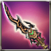
Available to equip above Expert Level - Fighter
The star of Scorpio. Brimming with unfathomable power..
| Enchantchip Veteran x3 |
| Melee Weapon Crystal - Lv 30 x1 |
 Ancient Rune - Ti x50 Ancient Rune - Ti x50 |
| Ancient Rune - Ar x50 |
 liquid of Heaven x10 liquid of Heaven x10 |
| Fool Stone x1 |
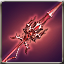
Available to equip above Expert Level - Fighter
A javelin that Dr.Torsche made based on the founded weapons in the Lucifer Castle. It can inflict [Focusing]. [Critical + 10]
| Melee Weapon Crystal - Lv 35 x2 |
| Star Stone x10 |
 Wheel of Time x100 Wheel of Time x100 |
| Enchantchip Veteran x50 |
| Elemental Jewel x5 |
| Fool Stone x1 |
Available to equip above Expert Level - Fighter
The star of Scorpio. Brimming with unfathomable power..
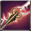
Available to equip above Expert Level - Fighter
A Javelin used by Bristia soldiers. It shows its thousand different efficiencies depending on the custody condition.
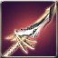
Available to equip above Expert Level - Fighter
A javelin that was crafted by Armonium which maintained holy power in spite of erosion of Abyss. [Critical + 10]
| Enchantchip Veteran x100 |
| Melee Weapon Crystal - Lv 34 x1 |
 Armonias Holywater x10 Armonias Holywater x10 |
| Fool Stone x1 |
| Fool Stone x1 |
Available to equip above Expert Level - Fighter
The star of Scorpio. Brimming with unfathomable power..
| Enchantchip Veteran x50 |
| Melee Weapon Crystal - Lv 33 x1 |
| Ancient Rune - Ti x50 |
| Ancient Rune - Ar x50 |
| Fool Stone x1 |
| Fool Stone x1 |
Available to equip above Expert Level - Fighter
The star of Scorpio. Brimming with unfathomable power.{br}[All types of ATK +100%]{br}It will be deleted, when the event ends.
Available to equip above Expert Level - Fighter
A javelin that Dr.Torsche made based on the founded weapons in the Lucifer Castle. It can inflict [Focusing]. [Critical + 10]{br}[All types of ATK +100%]
Available to equip above Expert Level - Fighter
The star of Scorpio. Brimming with unfathomable power..
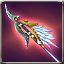
Available to equip above Expert Level - Fighter
A Javelin that is specially designed to fight against Demon. [Penetration +5, Fire/Ice/Lightning/Mental ATK +10, increases ATK by 10% towards Demon enemy]
| Melee Weapon Crystal - Lv 33 x2 |
| Moon Stone x5 |
| a lump of Platinum x3 |
| Dragon Heart x1 |
| Fool Stone x1 |
| Fool Stone x1 |
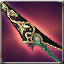
Available to equip above Expert Level - Fighter
A jade tipped javelin. [Penetration +10]
| Melee Weapon Crystal - Lv 33 x2 |
| Moon Stone x5 |
| a lump of Platinum x3 |
| Dragon Heart x1 |
| Fool Stone x1 |
| Fool Stone x1 |
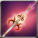
Available to equip above Expert Level - Fighter
A weapon designed with forturn-telling cards used in the Old Continent. Javelin with will of Tower . [ATK SPD+10%,Piercing Bound Lv.+1,Infinity ShootingStar Lv.+1]
| Melee Weapon Crystal - Lv 33 x2 |
| Moon Stone x5 |
| a lump of Platinum x3 |
| Dragon Heart x1 |
| Fool Stone x1 |
| Fool Stone x1 |
Available to equip above Expert Level - Fighter
Javelin that belongs to a prospering family in the past. At that time, giving weapons to the nation was one way to be approved of the familys legitimacy officially. [Penetration +3]
| Enchantchip Veteran x100 |
| Melee Weapon Crystal - Lv 33 x1 |
 Shiny Crystal x200 Shiny Crystal x200 |
| Fool Stone x1 |
| Fool Stone x1 |
Available to equip above Expert Level - Fighter
A spear made by cutting the bones of the sea monster, Kenken.
Available to equip above Master - Fighter
A javelin made from the power in Body of Death Wraith. Can inflict [Focusing]. [Critical + 10]
| Symbol of Naraka x100 |
| Melee Weapon Crystal - Lv 35 x1 |
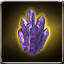 Essence of DeathWarith x50 |
 Devils Dream x100 Devils Dream x100 |
| liquid of Heaven x3 |
| Fool Stone x1 |
Available to equip above Master - Fighter
A Bristia Weapon, which is newly made by the artisan spirit of Victor. It shows a strong performance.
Available to equip above Master - Fighter
A Bristia Weapon, which is newly made by the artisan spirit of Victor. It shows a strong performance.
 Pure Essence x1000 Pure Essence x1000 |
 Fallen Essence x1000 Fallen Essence x1000 |
 Balance Essence x1000 Balance Essence x1000 |
 Warped weapon debris x1500 Warped weapon debris x1500 |
| Melee Weapon Crystal - Lv 36 x1 |
| Fool Stone x1 |
Available to equip above High Master - Fighter
Blacksmith Bryan made this by refining Blue Armonium with her special skill. It can be blessed by Baruch, the Priest of the Armonia Cathedral.
| Melee Weapon Crystal - Lv 36 x1 |
 Symbol of DarkKnight x100 Symbol of DarkKnight x100 |
 Symbol of DarkPriest x100 Symbol of DarkPriest x100 |
 Armonium Ore - Blue x20 Armonium Ore - Blue x20 |
 Armonia Token x200 Armonia Token x200 |
| Armonias Holywater x150 |
| liquid of Heaven x5 |
Available to equip above Master - Fighter
The star of Scorpio. the unfathomable power inherited and embodied. Recreated by Valeron and showing amazing power.[Penetration +6, CRI +15]
| Melee Weapon Crystal - Lv 35 x1 |
 Symbol of Dark Shodow, D x200 Symbol of Dark Shodow, D x200 |
 Symbol of Patrikyon x200 Symbol of Patrikyon x200 |
 The Rune of Talos, Shiny Holy Water x50 The Rune of Talos, Shiny Holy Water x50 |
| liquid of Heaven x3 |
| Fool Stone x1 |
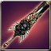
Available to equip above High Master - Fighter
It was restored through the legendary Blacksmith Ignacio Valerons Weapon Manufacture Book. Though its performance is less than half of the original, it displays unequaled ability. [Valerons Protection] can be added by Violet Valeron.
| Melee Weapon Crystal - Lv 37 x1 |
| Black Insignia of Evora x100 |
| Golden Insignia of Magic Corps x100 |
| Symbol of Patrikyon x50 |
| Warped weapon debris x500 |
 Shiny Sollarion x300 Shiny Sollarion x300 |
| liquid of Heaven x5 |
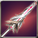
Available to equip above High Master - Fighter
Javelin containing Fire Master Charlottes power
[PEN+10, Extra Damage to All Tribes+25%]
| Melee Weapon Crystal - Lv 38 x1 |
| Armonium Ore - Red x500 |
| Armonium Ore - Red x500 |
 TimePiece : Rose x500 TimePiece : Rose x500 |
| TimePiece : Rose x900 |
 Vertrauen Symbol x1 Vertrauen Symbol x1 |
 Star Essence x50 Star Essence x50 |
Available to equip above High Master - Fighter
Javelin containing Fire Master Charlottes power
[PEN+10, Extra Damage to All Tribes+25%]
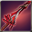
Available to equip above High Master - Fighter
The weapon made to fight against Abyss Army by processing Earth-color Armonium containing Abyss Essence. It can retain the shape as a weapon thanks to the holy power, but its shape looks ominous owing to Abyss Essences power.{br}[Extra damage to Demon type enemy+25%]
| Melee Weapon Crystal - Lv 38 x1 |
| liquid of Heaven x10 |
 Armonium Ore - Black x10000 Armonium Ore - Black x10000 |
| Fool Stone x1 |
| Fool Stone x1 |
Available to equip above High Master - Fighter
The weapon made to fight against Abyss Army by processing Earth-color Armonium containing Abyss Essence. It can retain the shape as a weapon thanks to the holy power, but its shape looks ominous owing to Abyss Essences power.{br}[Extra damage to Demon type enemy+25%]
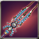
Available to equip above High Master - Fighter
Mysterious Treasure Chest
Available to equip above High Master - Fighter
Mysterious Treasure Chest
Available to equip above Master - Fighter
A javelin made from the power in Body of Death Wraith. Can inflict [Focusing]. [Critical + 10]
| Symbol of Naraka x100 |
| Melee Weapon Crystal - Lv 35 x1 |
| Essence of DeathWarith x50 |
| Devils Dream x100 |
| liquid of Heaven x3 |
| Fool Stone x1 |
Available to equip above High Master - Fighter
Blacksmith Bryan made this by refining Blue Armonium with her special skill. It can be blessed by Baruch, the Priest of the Armonia Cathedral.
Available to equip above Master - Fighter
The star of Scorpio. the unfathomable power inherited and embodied. Recreated by Valeron and showing amazing power.[Penetration +6, CRI +15]
Available to equip above High Master - Fighter
It was restored through the legendary Blacksmith Ignacio Valerons Weapon Manufacture Book. Though its performance is less than half of the original, it displays unequaled ability. [Valerons Protection] can be added by Violet Valeron.
Available to equip above Master - Fighter
A javelin made from the power in Body of Death Wraith. Can inflict [Focusing]. [Critical + 10]{br}[All types of ATK +100%]
Available to equip above High Master - Fighter
Blacksmith, Bryan made it by refining Blue Armonium with her special skill. {br}[All types of ATK +100%]
Available to equip above High Master - Fighter
Old weapon Violet Valeron restored in the past. Its performance is lower than the original version.{br}[ATK to all types+100%]
Available to equip above High Master - Fighter
Write a memo on the board. Registration for request is free, while suggestion costs 10,000 Vis.
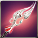
Available to equip above Master - Fighter
A masterpiece Javeline incooperated with New Continents dexterity. Has both beauty and strength. Enchant distinct option [Concentration] can be invoked. [ATK SPD+10%, Critical+10]
| Melee Weapon Crystal - Lv 35 x2 |
| Star Stone x30 |
| kryptonite x200 |
| Enchantchip Veteran x100 |
| Elemental Jewel x10 |
| Fool Stone x1 |
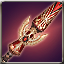
Available to equip above High Master - Fighter
The weapon of luxirious decoration drank lots of bloods and dyed red by oneself. The weapon that contained grudge seems to want the owners bloods as well. It gives a heavy cross. [Damage to all tribes +80%, Penetration +10, Accuracy -20, ATK Speed -20%, Critical-20]